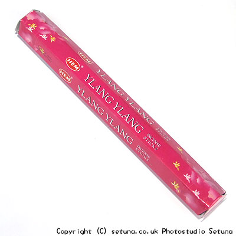

そのままの匂いははっきりと申し上げますと、薬臭いです。
精油そのままのものはブレンド用として私も好きなものなのですが、単品でしかもお香にしてしまうと、こんなにも・・・どうしようもない匂いというか・・・・
バーベキュー用の炭の焼ける匂いが一番近いかと・・・(涙)
精油の質がお香にしてしまうため変わってしまうのだと思うのですが本来相性のいいとされている、ベルガモットや白檀系、オレンジ系とも合わなくなっています。
ただ、エジプシャンジャスミンに関してはジャスミンの補助としての役割が果たせるようで、ジャスミンの香りがランクアップして割といい感じになります。
